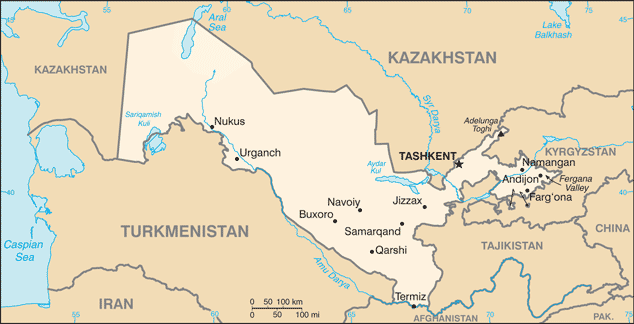
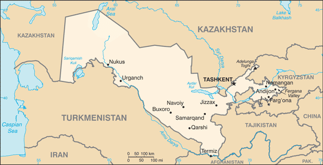

Central Asia :: UZBEKISTAN
Introduction :: UZBEKISTAN
-
Russia conquered the territory of present-day Uzbekistan in the late 19th century. Stiff resistance to the Red Army after the Bolshevik Revolution was eventually suppressed and a socialist republic established in 1924. During the Soviet era, intensive production of "white gold" (cotton) and grain led to overuse of agrochemicals and the depletion of water supplies, which have left the land degraded and the Aral Sea and certain rivers half dry. Independent since 1991 upon the dissolution of the USSR, the country is striving to reduce its dependence on the cotton monoculture by diversifying agricultural production while developing its mineral and petroleum export capacity and increasing its manufacturing base. Uzbekistan’s first president, Islom KARIMOV, led Uzbekistan for 25 years until his death in September 2016. The political transition to his successor, then-Prime Minister Shavkat MIRZIYOYEV was peaceful, but sidelined the constitutional process where the chairman of the Senate would have served as the acting president. MIRZIYOYEV, who won the presidential election in December 2016, has sought to improve relations with Uzbekistan’s neighbors and proposed wide-ranging economic and judicial reforms.
Geography :: UZBEKISTAN
-
Central Asia, north of Turkmenistan, south of Kazakhstan41 00 N, 64 00 EAsiatotal: 447,400 sq kmland: 425,400 sq kmwater: 22,000 sq kmcountry comparison to the world: 58about four times the size of Virginia; slightly larger than Californiatotal: 6,893 kmborder countries (5): Afghanistan 144 km, Kazakhstan 2,330 km, Kyrgyzstan 1,314 km, Tajikistan 1,312 km, Turkmenistan 1,793 km0 km (doubly landlocked); note - Uzbekistan includes the southern portion of the Aral Sea with a 420 km shorelinenone (doubly landlocked)mostly mid-latitude desert, long, hot summers, mild winters; semiarid grassland in eastmostly flat-to-rolling sandy desert with dunes; broad, flat intensely irrigated river valleys along course of Amu Darya, Syr Darya (Sirdaryo), and Zarafshon; Fergana Valley in east surrounded by mountainous Tajikistan and Kyrgyzstan; shrinking Aral Sea in westmean elevation: NAelevation extremes: lowest point: Sariqamish Kuli -12 mhighest point: Adelunga Toghi 4,301 mnatural gas, petroleum, coal, gold, uranium, silver, copper, lead and zinc, tungsten, molybdenumagricultural land: 62.6%arable land 10.1%; permanent crops 0.8%; permanent pasture 51.7%forest: 7.7%other: 29.7% (2011 est.)42,150 sq km (2012)most of the population is concentrated in the fertile Fergana Valley in the easternmost arm of the country; the south has significant clusters of people, while the central and western deserts are sparsely populatedearthquakes; floods; landslides or mudslides; avalanches; droughtsshrinkage of the Aral Sea has resulted in growing concentrations of chemical pesticides and natural salts; these substances are then blown from the increasingly exposed lake bed and contribute to desertification and respiratory health problems; water pollution from industrial wastes and the heavy use of fertilizers and pesticides is the cause of many human health disorders; increasing soil salination; soil contamination from buried nuclear processing and agricultural chemicals, including DDTparty to: Biodiversity, Climate Change, Climate Change-Kyoto Protocol, Desertification, Endangered Species, Environmental Modification, Hazardous Wastes, Ozone Layer Protection, Wetlandssigned, but not ratified: none of the selected agreementsalong with Liechtenstein, one of the only two doubly landlocked countries in the world
People and Society :: UZBEKISTAN
-
29,748,859 (July 2017 est.)country comparison to the world: 44noun: Uzbekistaniadjective: UzbekistaniUzbek 80%, Russian 5.5%, Tajik 5%, Kazakh 3%, Karakalpak 2.5%, Tatar 1.5%, other 2.5% (1996 est.)Uzbek (official) 74.3%, Russian 14.2%, Tajik 4.4%, other 7.1%note: in the Karakalpakstan Republic, both the Karakalpak language and Uzbek have official statusMuslim 88% (mostly Sunni), Eastern Orthodox 9%, other 3%0-14 years: 23.88% (male 3,640,914/female 3,464,304)15-24 years: 18.52% (male 2,804,516/female 2,706,399)25-54 years: 44.49% (male 6,583,745/female 6,651,261)55-64 years: 7.85% (male 1,105,034/female 1,231,714)65 years and over: 5.25% (male 667,109/female 893,863) (2017 est.)total dependency ratio: 47.7youth dependency ratio: 41.4elderly dependency ratio: 6.2potential support ratio: 16 (2015 est.)total: 28.6 yearsmale: 28 yearsfemale: 29.2 years (2017 est.)country comparison to the world: 1310.93% (2017 est.)country comparison to the world: 12716.8 births/1,000 population (2017 est.)country comparison to the world: 1095.3 deaths/1,000 population (2017 est.)country comparison to the world: 181-2.2 migrant(s)/1,000 population (2017 est.)country comparison to the world: 166most of the population is concentrated in the fertile Fergana Valley in the easternmost arm of the country; the south has significant clusters of people, while the central and western deserts are sparsely populatedurban population: 36.6% of total population (2017)rate of urbanization: 1.62% annual rate of change (2015-20 est.)TASHKENT (capital) 2.251 million (2015)at birth: 1.06 male(s)/female0-14 years: 1.05 male(s)/female15-24 years: 1.03 male(s)/female25-54 years: 0.99 male(s)/female55-64 years: 0.9 male(s)/female65 years and over: 0.74 male(s)/femaletotal population: 0.99 male(s)/female (2016 est.)23.4 years (2014 est.)36 deaths/100,000 live births (2015 est.)country comparison to the world: 109total: 18 deaths/1,000 live birthsmale: 21.4 deaths/1,000 live birthsfemale: 14.4 deaths/1,000 live births (2017 est.)country comparison to the world: 90total population: 74 yearsmale: 71 yearsfemale: 77.3 years (2017 est.)country comparison to the world: 1271.76 children born/woman (2017 est.)country comparison to the world: 1595.8% of GDP (2014)country comparison to the world: 1112.45 physicians/1,000 population (2014)4.4 beds/1,000 population (2010)improved:urban: 98.5% of populationrural: 80.9% of populationtotal: 87.3% of populationunimproved:urban: 1.5% of populationrural: 19.1% of populationtotal: 12.7% of population (2012 est.)improved:urban: 100% of populationrural: 100% of populationtotal: 100% of populationunimproved:urban: 0% of populationrural: 0% of populationtotal: 0% of population (2015 est.)NANANA16.6% (2016)country comparison to the world: 123NAdefinition: age 15 and over can read and writetotal population: 100%male: 100%female: 100% (2015 est.)total: 12 yearsmale: 13 yearsfemale: 12 years (2016)
Government :: UZBEKISTAN
-
conventional long form: Republic of Uzbekistanconventional short form: Uzbekistanlocal long form: O'zbekiston Respublikasilocal short form: O'zbekistonformer: Uzbek Soviet Socialist Republicetymology: a combination of the Turkic words "uz" (self) and "bek" (master) with the Persian suffix "-stan" (country) to give the meaning "Land of the Free"presidential republic; highly authoritarianname: Tashkent (Toshkent)geographic coordinates: 41 19 N, 69 15 Etime difference: UTC+5 (10 hours ahead of Washington, DC, during Standard Time)12 provinces (viloyatlar, singular - viloyat), 1 autonomous republic* (avtonom respublikasi), and 1 city** (shahar); Andijon Viloyati, Buxoro Viloyati, Farg'ona Viloyati, Jizzax Viloyati, Namangan Viloyati, Navoiy Viloyati, Qashqadaryo Viloyati (Qarshi), Qoraqalpog'iston Respublikasi [Karakalpakstan Republic]* (Nukus), Samarqand Viloyati, Sirdaryo Viloyati (Guliston), Surxondaryo Viloyati (Termiz), Toshkent Shahri [Tashkent City]**, Toshkent Viloyati [Tashkent province], Xorazm Viloyati (Urganch)note: administrative divisions have the same names as their administrative centers (exceptions have the administrative center name following in parentheses)1 September 1991 (from the Soviet Union)Independence Day, 1 September (1991)history: several previous; latest adopted 8 December 1992amendments: proposed by the Supreme Assembly or by referendum; passage requires two-thirds majority vote of both houses of the Assembly or passage in a referendum; amended several times, last in 2014 (2017)civil law systemhas not submitted an ICJ jurisdiction declaration; non-party state to the ICCtcitizenship by birth: nocitizenship by descent only: at least one parent must be a citizen of Uzbekistandual citizenship recognized: noresidency requirement for naturalization: 5 years18 years of age; universalchief of state: President Shavkat MIRZIYOYEV (interim president from 8 September 2016; formally elected president on 4 December 2016 to succeed longtime President Islom KARIMOV, who died on 2 September 2016)head of government: Prime Minister Abdulla ARIPOV (since 14 December 2016); First Deputy Prime Minister Achilbay RAMATOV (since 15 December 2016)cabinet: Cabinet of Ministers appointed by the president with most requiring approval of the Senate chamber of the Supreme Assembly (Oliy Majlis)elections/appointments: president directly elected by absolute majority popular vote in 2 rounds if needed for a 5-year term (eligible for a second term; previously a 5-year term, extended by a 2002 constitutional amendment to 7 years, and reverted to 5 years in 2011); election last held on 4 December 2016 (next to be held in 2021); prime minister nominated by majority party in legislature since 2011, but appointed along with the ministers and deputy ministers by the presidentelection results: Shavkat MIRZIYOYEV elected president; percent of vote - Shavkat MIRZIYOYEV (LDPU) 88.6%, Khatamjon KETMONOV (NDP) 3.7%, Narimon UMAROV (Adolat) 3.5%, Sarvar OTAMURADOV (Milliy Tiklanish/National Revival) 2.4%, other 1.8%description: bicameral Supreme Assembly or Oliy Majlis consists of the Senate (100 seats; 84 members indirectly elected by regional governing councils and 16 appointed by the president; members serve 5-year terms) and the Legislative Chamber or Qonunchilik Palatasi (150 seats; 135 members directly elected in single-seat constituencies by absolute majority vote with a second round, if needed, and 15 indirectly elected by the Ecological Movement of Uzbekistan; members serve 5-year terms)note: all parties in the Supreme Assembly support President Shavkat MIRZIYOYEVelections: last held on 21 December 2014 and 4 January 2015 (next to be held in December 2019)election results: Senate - percent of vote by party - NA; seats by party - NA; Legislative Chamber - percent of vote by party - NA; seats by party - LDPU 52, National Revival Democratic Party 36, NDP 27, Adolat 20, Ecological Movement 15highest court(s): Supreme Court (consists of 67 judges organized into administrative, civil, criminal, economic, and military sections); Constitutional Court (consists of 7 judges)judge selection and term of office: judges of the highest courts nominated by the president and confirmed by the Oliy Majlis; judges appointed for initial 5-year term, subsequent 10-year term, and lifetime term subject to reappointmentsubordinate courts: regional, district, city, and town courts; economic courtsEcological Movement of Uzbekistan (O'zbekiston Ekologik Harakati) [Boriy ALIKHANOV]Justice (Adolat) Social Democratic Party of Uzbekistan [Narimon UMAROV]Liberal Democratic Party of Uzbekistan (O'zbekiston Liberal-Demokratik Partiyasi) or LDPU [Shavkat MIRZIYOYEV]National Revival Democratic Party of Uzbekistan (O'zbekiston Milliy Tiklanish Demokratik Partiyasi) [Sarvar OTAMURATOV]People's Democratic Party of Uzbekistan (Xalq Demokratik Partiyas) or NDP [Hotamjon KETMONOV] (formerly Communist Party)no significant opposition political parties or pressure groups in UzbekistanADB, CICA, CIS, EAPC, EBRD, ECO, FAO, IAEA, IBRD, ICAO, ICC (national committees), ICCt, ICRM, IDA, IDB, IFAD, IFC, IFRCS, ILO, IMF, Interpol, IOC, ISO, ITSO, ITU, MIGA, NAM, OIC, OPCW, OSCE, PFP, SCO, UN, UN Security Council (temporary), UNCTAD, UNESCO, UNIDO, UNWTO, UPU, WCO, WFTU (NGOs), WHO, WIPO, WMO, WTO (observer)chief of mission: Ambassador (vacant); Charge d'Affaires Said RUSTAMOV (since 24 April 2017)chancery: 1746 Massachusetts Avenue NW, Washington, DC 20036telephone: [1] (202) 887-5300FAX: [1] (202) 293-6804consulate(s) general: New Yorkchief of mission: Ambassador Pamela L. SPRATLEN (since 27 January 2015)embassy: 3 Moyqo'rq'on, 5th Block, Yunusobod District, Tashkent 100093mailing address: use embassy street addresstelephone: [998] (71) 120-5450FAX: [998] (71) 120-6335three equal horizontal bands of blue (top), white, and green separated by red fimbriations with a white crescent moon (closed side to the hoist) and 12 white stars shifted to the hoist on the top band; blue is the color of the Turkic peoples and of the sky, white signifies peace and the striving for purity in thoughts and deeds, while green represents nature and is the color of Islam; the red stripes are the vital force of all living organisms that links good and pure ideas with the eternal sky and with deeds on earth; the crescent represents Islam and the 12 stars the months and constellations of the Uzbek calendarkhumo (mythical bird); national colors: blue, white, red, greenname: "O'zbekiston Respublikasining Davlat Madhiyasi" (National Anthem of the Republic of Uzbekistan)lyrics/music: Abdulla ARIPOV/Mutal BURHANOVnote: adopted 1992; after the fall of the Soviet Union, Uzbekistan kept the music of the anthem from its time as a Soviet Republic but adopted new lyrics
Economy :: UZBEKISTAN
-
Uzbekistan is a doubly landlocked country in which 51% of the population lives in urban settlements; the agriculture-rich Fergana Valley, in which Uzbekistan’s eastern borders are situated, has been counted among the most densely populated parts of Central Asia. Since its independence in September 1991, the government has largely maintained its Soviet-style command economy with subsidies and tight controls on production, prices, and access to foreign currency. Despite ongoing efforts to diversify crops, Uzbek agriculture remains largely centered on cotton; Uzbekistan is the world's fifth-largest cotton exporter and seventh-largest producer. Uzbekistan's growth has been driven primarily by state-led investments, and export of natural gas, gold, and cotton provides a significant share of foreign exchange earnings. In early 2016, Russia’s Gazprom announced it planned to increase purchases of Uzbek gas.Aware of the need to improve the investment climate, the government is taking incremental steps to reform the business sector and address impediments to foreign investment in the country. Since the death of first President Islam KARIMOV, rhetorical emphasis on such initiatives and ostensible government efforts to seek input from the private sector have increased. In the past, Uzbek authorities have accused US and other foreign companies operating in Uzbekistan of violating Uzbek laws and have frozen and seized their assets. At the same time, the Uzbek Government has actively courted several major US and international corporations, offering financing and tax advantages.In 2003, the government accepted Article VIII obligations under the IMF, providing for full currency convertibility. However, strict currency controls and tightening of borders have lessened the effects of convertibility and have also led to some shortages that have further stifled economic activity, and the government has lately raised the issue of currency reform in a number of official decrees and proclamations. Recently, lower global commodity prices and economic slowdown in neighboring Russia and China have been hurting Uzbekistan's trade and investment and worsening its problem of foreign currency shortage.$205.6 billion (2016 est.)$188.4 billion (2015 est.)$172.5 billion (2014 est.)note: data are in 2016 dollarscountry comparison to the world: 64$66.85 billion (2016 est.)7.8% (2016 est.)8% (2015 est.)8.1% (2014 est.)country comparison to the world: 5$6,600 (2016 est.)$6,200 (2015 est.)$5,800 (2014 est.)note: data are in 2016 dollarscountry comparison to the world: 15931.6% of GDP (2016 est.)31.6% of GDP (2015 est.)32.5% of GDP (2014 est.)country comparison to the world: 56household consumption: 60.1%government consumption: 16.5%investment in fixed capital: 24.8%investment in inventories: 3%exports of goods and services: 19.9%imports of goods and services: -21.2% (2016 est.)agriculture: 18.5%industry: 34.6%services: 46.8% (2016 est.)cotton, vegetables, fruits, grain; livestocktextiles, food processing, machine building, metallurgy, mining, hydrocarbon extraction, chemicals4% (2016 est.)country comparison to the world: 5917.85 million (2016 est.)country comparison to the world: 35agriculture: 25.9%industry: 13.2%services: 60.9% (2012 est.)4.9% (2016 est.)4.9% (2015 est.)note: official data; another 20% are underemployedcountry comparison to the world: 6514% (2016 est.)lowest 10%: 2.8%highest 10%: 29.6% (2003)36.8 (2003)44.7 (1998)country comparison to the world: 82revenues: $21.37 billionexpenditures: $21.31 billion (2016 est.)32.1% of GDP (2016 est.)country comparison to the world: 710.1% of GDP (2016 est.)country comparison to the world: 4015.4% of GDP (2016 est.)13.5% of GDP (2015 est.)country comparison to the world: 191calendar year8% (2016 est.)10% (2015 est.)note: official data; based on independent analysis of consumer prices, inflation reached 22% in 2012country comparison to the world: 2089% (2016)9% (2015)country comparison to the world: 3016% (31 December 2016 est.)11.2% (31 December 2012 est.)country comparison to the world: 33$7.555 billion (31 December 2016 est.)$7.403 billion (31 December 2015 est.)country comparison to the world: 89$17.47 billion (31 December 2016 est.)$16.26 billion (31 December 2015 est.)country comparison to the world: 92$11.63 billion (31 December 2016 est.)$11.78 billion (31 December 2015 est.)country comparison to the world: 104$NA (31 December 2012)$715.3 million (31 December 2006)$498 million (2016 est.)$-159.7 million (2015 est.)country comparison to the world: 74$11.2 billion (2016 est.)$11.5 billion (2015 est.)country comparison to the world: 83energy products, cotton, gold, mineral fertilizers, ferrous and nonferrous metals, textiles, foodstuffs, machinery, automobilesSwitzerland 35.1%, China 19.7%, Russia 9.3%, Turkey 8.7%, Kazakhstan 7.2%, Bangladesh 5.4%, Afghanistan 4.9% (2016)$10.91 billion (2016 est.)$12 billion (2015 est.)country comparison to the world: 93machinery and equipment, foodstuffs, chemicals, ferrous and nonferrous metalsChina 22.2%, Russia 18%, South Korea 10.5%, Kazakhstan 10%, Turkey 5.8%, Germany 5.2% (2016)$14 billion (31 December 2016 est.)$15 billion (31 December 2015 est.)country comparison to the world: 68$16.76 billion (31 December 2016 est.)$14.84 billion (31 December 2015 est.)country comparison to the world: 97$NA$NAUzbekistani soum (UZS) per US dollar -2,966.6 (2016 est.)2,966.6 (2015 est.)2,569.6 (2014 est.)2,311.4 (2013 est.)1,890.1 (2012 est.)
Energy :: UZBEKISTAN
-
electrification - total population: 100% (2016)59 billion kWh (2016 est.)country comparison to the world: 4948 billion kWh (2014 est.)country comparison to the world: 5213 billion kWh (2014 est.)country comparison to the world: 1713 billion kWh (2014 est.)country comparison to the world: 2112.93 million kW (2015 est.)country comparison to the world: 5486.4% of total installed capacity (2015 est.)country comparison to the world: 730% of total installed capacity (2015 est.)country comparison to the world: 20213.6% of total installed capacity (2015 est.)country comparison to the world: 1100% of total installed capacity (2015 est.)country comparison to the world: 21152,910 bbl/day (2016 est.)country comparison to the world: 5227,000 bbl/day (2014 est.)country comparison to the world: 50380 bbl/day (2014 est.)country comparison to the world: 81594 million bbl (1 January 2017 es)country comparison to the world: 4763,650 bbl/day (2014 est.)country comparison to the world: 7861,000 bbl/day (2015 est.)country comparison to the world: 964,102 bbl/day (2014 est.)country comparison to the world: 980 bbl/day (2014 est.)country comparison to the world: 21555.7 billion cu m (2015 est.)country comparison to the world: 1610.44 billion cu m (2015 est.)country comparison to the world: 5414.7 billion cu m (2014 est.)country comparison to the world: 170 cu m (2013 est.)country comparison to the world: 2031.841 trillion cu m (1 January 2017 es)country comparison to the world: 20109 million Mt (2013 est.)country comparison to the world: 37
Communications :: UZBEKISTAN
-
total subscriptions: 3,412,921subscriptions per 100 inhabitants: 12 (July 2016 est.)country comparison to the world: 53total: 23,265,389subscriptions per 100 inhabitants: 79 (July 2016 est.)country comparison to the world: 56general assessment: digital exchanges in large cities and in rural areasdomestic: the state-owned telecommunications company, Uzbektelecom, owner of the fixed-line telecommunications system, has used loans from the Japanese government and the China Development Bank to upgrade fixed-line services including conversion to digital exchanges; mobile-cellular services are provided by three private and two state-owned operators with a total subscriber base of 23 million as of mid-2016international: country code - 998; linked by fiber-optic cable or microwave radio relay with CIS member states and to other countries by leased connection via the Moscow international gateway switch; the country also has a link to the Trans-Asia-Europe (TAE) fiber-optic cable; Uzbekistan has supported the national fiber- optic backbone project of Afghanistan since 2008 (2016)government controls media; 18 state-owned broadcasters - 14 TV and 4 radio - provide service to virtually the entire country; about 20 privately owned TV stations, overseen by local officials, broadcast to local markets; privately owned TV stations are required to lease transmitters from the government-owned Republic TV and Radio Industry Corporation; in 2013, the government closed TV and radio broadcasters affiliated with the National Association of Electronic Mass Media (NAEMM) of Uzbekistan, a government-sponsored NGO for private broadcast media; in 2015, the NAEMM relaunched its TV channel under a different name (2017).uztotal: 13,791,083percent of population: 46.8% (July 2016 est.)country comparison to the world: 41
Transportation :: UZBEKISTAN
-
number of registered air carriers: 2inventory of registered aircraft operated by air carriers: 29annual passenger traffic on registered air carriers: 2,486,673annual freight traffic on registered air carriers: 114,334,520 mt-km (2015)UK (2016)53 (2013)country comparison to the world: 89total: 33over 3,047 m: 62,438 to 3,047 m: 131,524 to 2,437 m: 6914 to 1,523 m: 4under 914 m: 4 (2013)total: 202,438 to 3,047 m: 2under 914 m: 18 (2013)gas 13,700 km; oil 944 km (2016)total: 4,304 kmbroad gauge: 4,304 km 1.520-m gauge (1,354 km electrified) (2016)country comparison to the world: 48total: 86,496 kmpaved: 75,511 kmunpaved: 10,985 km (2000)country comparison to the world: 541,100 km (2012)country comparison to the world: 62river port(s): Termiz (Amu Darya)
Military and Security :: UZBEKISTAN
-
Armed Forces: Army, Air and Air Defense Forces (2016)18 years of age for compulsory military service; 1-month or 1-year conscript service obligation for males; moving toward a professional military, but conscription in some form will continue; the military cannot accommodate everyone who wishes to enlist, and competition for entrance into the military is similar to the competition for admission to universities; note - widely considered to have one of the strongest militaries in Central Asia, although it is untested (2016)
Transnational Issues :: UZBEKISTAN
-
prolonged drought and cotton monoculture in Uzbekistan and Turkmenistan created water-sharing difficulties for Amu Darya river states; field demarcation of the boundaries with Kazakhstan commenced in 2004; border delimitation of 130 km of border with Kyrgyzstan is hampered by serious disputes around enclaves and other areasstateless persons: 86,524 (2016)current situation: Uzbekistan is a source country for men, women, and children subjected to forced labor and women and children subjected to sex trafficking; government-compelled forced labor of adults remained endemic during the 2014 cotton harvest; despite a decree banning the use of persons under 18, children were mobilized to harvest cotton by local officials in some districts; in some regions, local officials forced teachers, students, private business employees, and others to work in construction, agriculture, and cleaning parks; Uzbekistani women and children are victims of sex trafficking domestically and in the Middle East, Eurasia, and Asia; Uzbekistani men and, to a lesser extent, women are subjected to forced labor in Kazakhstan, Russia, and Ukraine in the construction, oil, agriculture, retail, and food sectorstier rating: Tier 2 Watch List – Uzbekistan does not fully comply with the minimum standards for the elimination of trafficking; however, it is making significant efforts to do so; law enforcement efforts in 2014 were mixed; the government made efforts to combat sex and transnational labor trafficking, but government-compelled forced labor of adults in the cotton harvest went unaddressed, and the decree prohibiting forced child labor was not applied universally; official complicity in human trafficking in the cotton harvest remained prevalent; authorities made efforts to identify and protect sex and transnational labor victims, although a systematic process is still lacking; minimal efforts were made to assist victims of forced labor in the cotton harvest, as the government does not openly acknowledge the existence of this forced labor; the ILO did not have permission or funding to monitor the 2014 harvest, but the government authorized the UN's International Labour Organization to conduct a survey on recruitment practices and working conditions in agriculture, particularly the cotton sector, and to monitor the 2015-17 cotton harvests for child and forced labor in project areas (2015)transit country for Afghan narcotics bound for Russian and, to a lesser extent, Western European markets; limited illicit cultivation of cannabis and small amounts of opium poppy for domestic consumption; poppy cultivation almost wiped out by government crop eradication program; transit point for heroin precursor chemicals bound for Afghanistan